Lebenslauf von Konrad Fischer
Lebenslauf und Biographie von Konrad Fischer, dem Herausgeber und Webmeister des Online-Magazins „Altbau und Denkmalpflege Informationen“.
von Konrad Fischer
Kapitelübersicht: Über Konrad Fischer
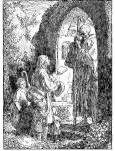
Dedikation/Widmung
Interview Klimaschutz
Beim Skizzieren
Was keiner wagt, das sollt ihr wagen, Was keiner sagt, das sagt heraus,
Was keiner denkt, sollt ihr befragen, Was keiner anfängt, das führt aus.Wenn keiner ja sagt, sollt ihr's sagen, Wenn keiner nein sagt, sagt doch nein,
Wenn alle zweifeln, wagt zu glauben, Wenn alle mittun, steht allein!Wo alle loben, habt Bedenken, Wo alle spotten, spottet nicht,
Wo alle geizen, wagt zu schenken, Wo alles dunkel ist, macht Licht!Walter Flex (6.7.1887 - 16.10.1917)
1955 geboren in Würzburg als erstes von drei Kindern (Schwester Erika, Erika Fischer stellt aus) des fränkischen Architekten Herbert Fischer (✴1919 Schwürbitz, ✝1979 Lichtenfels, nach Studium an der TU München u.a. bei Hans Döllgast, erste Anstellung beim Landbauamt Würzburg, dort Tätigkeit im Wiederaufbau der zerbombten Stadt, dann im Sakralbau-Büro von Albert Boßlet und seinem Neffen Ernst van Aken, ab 1957 selbstständig in Schwürbitz mit Projekten vorzugsweise im Sakralbau und der Denkmalpflege) und der siebenbürgischen Kirchenmusikerin Eva, geb. Möckesch (✴1923 Urwegen, ✝ 1999 Michelau i. Ofr.)
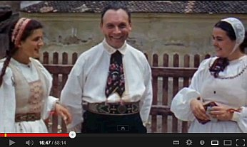
(von meinem Vater Herbert geplant: Evang.-luth. Auferstehungskirche mit Gemeindehaus in Neuensorg, 1961, Evang.-luth. Auferstehungskirche mit Pfarrhaus und Gemeindehaus in Zapfendorf, 1962)
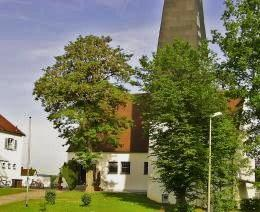
Auferstehungskirche in Zapfendorf 1962 (Ziegel massiv, verputzt und gekalkt) Kein flachdachmoderner Betonschwulst - und deswegen auch nach 44 Jahren noch nicht wegen Betonschäden kaputtkorrodiert, geschweige denn eingestürzt, Foto 2005 Harburg 1998 (von dort stammt meine Oma väterlicherseits)
Harburg 1998 (von dort stammt meine Oma väterlicherseits)
1957 Umzug nach Schwürbitz, als auf dem oberen Fischerhof, dem mein Vater als Ältester von vier Söhnen entstammte, größere Baumaßnahmen anstanden, die er betreuen sollte.
{kind=link}
1962-66 Evang.-Luth. Volksschule Schwürbitz
Schwörbetze Kärwa 2008 mit der Schwürbitzer Blaskapelle:
. 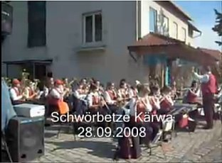
1966-75 Meraniergymnasium Lichtenfels, Mathematisch-Naturwissenschaftlicher Zweig, Latein als 2. Fremdsprache, Abschluß: Abitur (Abiturprüfungen in Deutsch, Englisch, Mathematik, Physik, Kunsterziehung)
1970 Konfirmation in der Evangelisch-Lutherischen Kirche zu Schwürbitz, (Evangelisch-Lutherische Kirchengemeinde Schwürbitz)
Mein Segensspruch:
Der Herr ist mein Licht und mein Heil; vor wem sollte ich mich fürchten! Der Herr ist meines Lebens Kraft; vor wem sollte mir grauen! Ps. 27.1.
1976-81 Architekturstudium TU München, Abschluß: Dipl.-Ing. Univ.
1979 Übernahme des vom verstorbenen Vater im Fachwerkdorf Schwürbitz am Main (Gemeinde Michelau i. Ofr.) 1957 gegründeten Architekturbüros (Schwerpunkte: Restaurierung von Baudenkmalen, Sakralbau, Neubau landschaftsgerechte Massivbauwerke aus Ziegel mit geneigtem Dach)
Mein Ahn 1692: Johann Adam Fischer, Gründer des Gasthofes "Stern" - im Obergeschoß ab 1957 erster Sitz des Architekturbüros
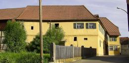
Der ehem. Gasthof zum Stern am 27.5.05, hier lebte ich von 1957-62, bis Familie und Büro in den Neubau Erhard-Vogel-Str. 1 umzog1742 - Neubau Brauereigasthof Fischer 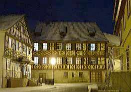
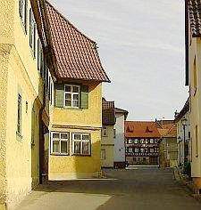
Die ehem. Fischergaststätten "Zum Stern / Unterer Fischer" (1692) und "Brauereigasthof / Oberer Fischer" (1742) auf einen Blick am 27.5.2005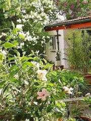
Im Garten des Schwürbitzer Elternhauses am 25.5.05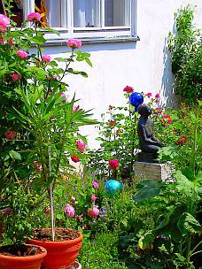
Im Garten am 7.6.08 Hier wohne ich von 1962-87, dann wieder ab 2001, das väterliche und ab 1979 mein Büro war hier 1962-19871982-84 Wissenschaftliches Volontariat am Bayerischen Landesamt für Denkmalpflege (Abt. Inventarisation - Prof. Dr. Tilmann Breuer, u.a. bei Dr. Sixtus Lampl, Referent für Oberpfalz und Denkmalorgeln; Bauforschung und Praktische Denkmalpflege - Dr.-Ing. Gert Th. Mader; Archäologie - Dr. Björn-Uwe Abels; Restaurierungswerkstätten - Prof. Dr. Dasser) Referenz des Bayerischen Landesamtes für Denkmalpflege
1984 Mitglied Bayerische Architektenkammer BYAK
1987 Umzug in die ehemalige Zisterzienserklostermühle (Luftbild ca. 1960) in Hochstadt a. Main, Landkreis Lichtenfels
{kind=link}
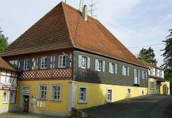
Die Klostermühle in Hochstadt, hier wohnte ich von 1987-2001, das Büro ist hier gebliebenSeit 1988 Seminarleitung und -vorträge für Architektenkammern, Hochschulen/Universitäten u.a. Veranstalter. Vorträge im Ausland (Dänemark, Italien, Österreich, Polen, Schottland, Schweden, China).
Verheiratet seit 1988 mit Petra geb. Bothe, Studienrätin für Mathematik und evang. Religionslehre, Prädikantin, 4 Kinder: Karolina (Edith Piaf: sa vie et ses chansons: Les liens entre la vie et l'oeuvre de la célèbre chanteuse Edith Piaf - Un travail spécialisés par Karolina Fischer 1/08), Mechthild, Editha, Wilhelm
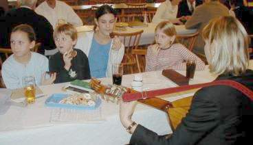
.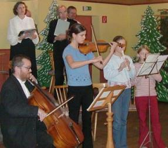
Mit Frau und Kindern beim Musizieren auf der Kreisgruppen-Weihnachtsfeier der Siebenbürgischen Landsmannschaft in Coburg 12/03 Frühlings- und Muttertagsfeier der Kreisgruppe am 19.05.2008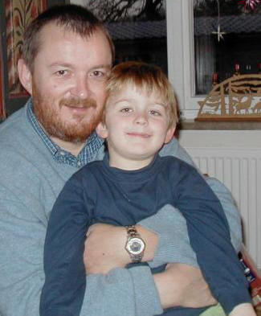
und mit dem Sohnemann Willi (5) auch mal daheim.1990 Aufbau Fachplanungsbereiche Tragwerk, alternativer Holzschutz und Haustechnik (Gas, Wasser, Abwasser, HLS, Hüllflächentemperierung) für Denkmalpflege, Alt- und Neubau in Massivbauweise
1991 Verleihung der "Medaille für Verdienste um Kultur und Tradition auf dem Lande" vom Bayer. Staatsministerium für Ernährung, Landwirtschaft und Forsten für die Fachwerkhaussanierung Eggenbach Haus Nr. 2
2010 Verleihung des "Verbraucherschutz-Awards" von Hausgeld Vergleich - Schutzgemeinschaft für Hauseigentümer und Mieter e.V. für meine "Aufklärungsarbeit zum Schutz der Verbraucher vor fragwürdigen Geldausgaben und gesundheitlichen Schäden"
Ein paar bepreiste Objektsanierungen nach meiner Planung und Bauleitung:
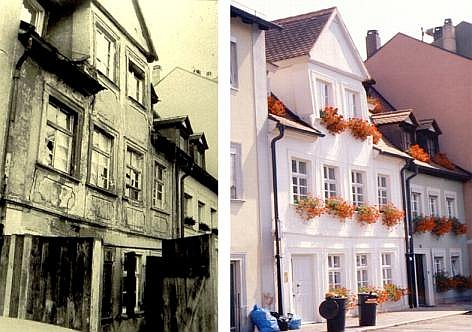
. Spätgotisches Bürgerhaus Bamberg Mühlwörth 6 vor und nach Sanierung - Bayerische Denkmalschutzmedaille 1986 .
. Eggenbach Hs. Nr. 2 vor und nach Sanierung - Bayerische Denkmalschutzmedaille 1990
(Kostenunterschreitung gegenüber Budget ca. 100.000 EUR dank Ausschreibungssystem und erhaltender Instandsetzung)
Eggenbach Hs. Nr. 2 vor und nach Sanierung - Bayerische Denkmalschutzmedaille 1990
(Kostenunterschreitung gegenüber Budget ca. 100.000 EUR dank Ausschreibungssystem und erhaltender Instandsetzung)
 .
. 2005 ebenso kostensicher instandgesetzt das ruinöse Graitzer Torhaus in Marktzeuln
2005 ebenso kostensicher instandgesetzt das ruinöse Graitzer Torhaus in Marktzeuln
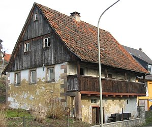
.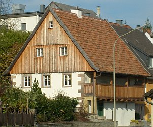
Blockbohlenhaus Untersteinach Tradgasse 15, erbaut Anf. 18. Jh., vor und nach Sanierung - Bayerische Denkmalschutzmedaille 20101996 - 2006 1., dann 3. Vorsitzender des Beirats für Denkmalerhaltung (früher "für Restaurierung") der Deutschen Burgenvereinigung e.V.
1997 Nachweisberechtigung für den vorbeugenden Brandschutz bei Vorhaben mittlerer Schwierigkeit gem. Art. 68 (7) Satz 3 Nr. 2 i.V.m. Art. 2 (4) BayBO (1998), Aufnahme in Liste der Nachweisberechtigten der Bayer. Architektenkammer (Brandschutz im Baudenkmal, Brandschutz im Altbau, Praxisratgeber Brandschutz in historischen Bauten)
1999 Ausbildung als geprüfter Sicherheits- und Gesundheitsschutz-Koordinator (SIGEKO) auf Multiplikatorenlehrgang der BauBG Bayern-Sachsen (Mein Seminarbeitrag SIGEKO im Altbau)
2002 Zulassung als "Verantwortlicher Sachverständiger nach § 2 ZVEnEV"/ab 2017 "Verantwortlicher Sachverständiger nach § 3 AVEn" gem. Beschluss des Eintragungsausschusses bei der Bayer. Architektenkammer und damit im Sinne der KfW-Förderbank-Richtlinien "eine nach Landesrecht berechtigte Person für die Aufstellung und Prüfung der Nachweise nach der Energieeinsparverordnung" sowie Berechtigter zur Bescheinigung einer Befreiung von den Anforderungen der EnEV gem. § 25 EnEV.
2006 Verpflichtung nach § 1 des Gesetzes über die förmliche Verpflichtung nichtbeamteter Personen vom 2.3.1974 (Verpflichtungsgesetz) durch GTM Bremen
Seit 1979 ca. 450 Baudenkmal-Instandsetzungen (Sakral- und Profanbau, selbstentpackende Projektliste als Excel-Download) in West- und Ostdeutschland. Behörden- und Bauherrenreferenzen. Derzeit (8/2017) 4 angestellte Mitarbeiter, davon 3 Ingenieure Bauingenieurwesen/Architektur.
Projektbezogene Zusammenarbeit mit Architekten in Schweden, Kasachstan, Ungarn und Tschechien.
Meinen Gratulanten zum 50. Geburtstag (2005) (Nach der "Schwäb´sche Eisebahne" zu singen) [Mein akkordeongestützter [Liedvortrag / Hörprobe auf Download-Video (wmv-Datei 9,7 MB, ca. 4 min)]
](KONRAD_L.WMV) Ü ber all´ die lieben Grüße aus Freundeskreis und manch´ Verein freut´ ich mich, dank´ und genieße, Euch nicht unbekannt zu sein. Ref.: Rulla, Rulla, ...
I m Vergleich zu morsch´ Gemäuer bin ich eigentlich nicht alt, doch mir ist nicht ganz geheuer: Wie lang ich wohl einmal halt? Ref.: Rulla, Rulla, ...
M ancher Zahn ist schon verloren und die Haare werden grau. Nach Sanierung neu geboren, geht nur bei ´nem alten Bau. Ref.: Rulla, Rulla, ...
W ertvoll sind deshalb die Gaben, die viel länger Freude machen, als der Körper, den wir haben und uns plagt mit Knirsch und Krachen: Ref.: Rulla, Rulla, ...
L iebe, Freunde, frommes Streben, Kinderglück, ´ne Sünde klein, Frühjahr schenkte grüne Reben, Herbst begeistert dann mit Wein. Ref.: Rulla, Rulla, ...
S pring ich auch nicht mehr so herum in der Jugend Übermut, wird reif, was einst gar zu dumm, und das tut uns allen gut ;-) Ref.: Rulla, Rulla, ...
Freizeitvergnügungen: Cellist im Instrumental-Collegium Lichtenfels (ICL) unter Heinz Wilk (seit 1973).
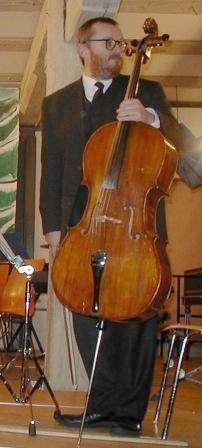
Nach der Nußknackersuite von Tschaikowski/Bearb. Bazu am 21.12.03 im Stadtschloß LichtenfelsBeim Weihnachtsoratorium (Teile 1, 4-6) von J.S. Bach am 28.12.2005 in Kronach, Leitung: Marius Popp Bild: Tim Birkner
Oder hier, etwas anders verpackt, in meinem Musikvideo aus der Leipziger St. Thomas-Kirche: Thomaskirche, Leipzig: Musik, Geschichte & Geheimnis + "Jauchzet, frohlocket" aus J.S. Bachs Weihnachtsoratorium (Konrad Fischer im Cello)
Musikalische Aktivitäten der Familie Fischer auf Video.wmv: Leopold Mozart: Schlittenfahrt Instrumental-Collegium Lichtenfels (m. Editha + Konrad Fischer), Ltg. Heinz Wilk, 19.12.2006 2MB Graupner: Bourreé + Schostakowitsch: Marsch m. Wilhelm Fischer, 24.06.2007 0,7MB
Musik von Wolfgang Amadeus Mozart u.a.m. Konrad Fischer (Cello)
Ave verum Corpus 7MB Mottete 'Exsultate, jubilate', KV 165: 1. Exsultate, 07.07.2007 13MB
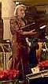 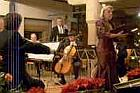 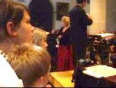 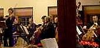 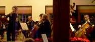
Chorsingen im Lorenz-Bach-Chor Lichtenfels (LBC) und im Chor der Siebenbürger Landsmannschaft, Bezirksgruppe Coburg
Musikvideos
Choräle nach Liedern von Paul Gerhardt m. dem Lorenz-Bach-Chor, Leitung: Dekanatskantor Klaus Bormann, am 15.07.2007 in der ev.-luth. St.Maria-Kirche in Schney (m. Konrad + Petra Fischer (Tenor/Alt))
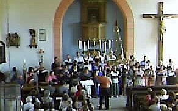 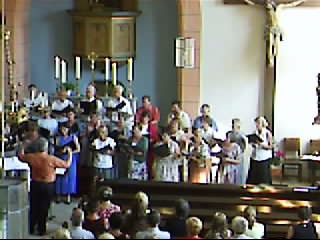
Musikvideos von der 100-Jahr-Feier des Meranier-Gymnasiums Lichtenfels MGL 21.07.2007:
Festakt (Mitwirkende u.a.: MGL-Chor, MGL-Orchester):
Festgottesdienst in der Basilika Vierzehnheiligen (Mitwirkende u.a.: MGL-Chor/LBC, MGL-Orchester/ICL):
Wolfgang Amadeus Mozart: Missa brevis et solemnis (Spatzenmesse) - Kyrie (Ltg.: Elke Gruber) 3MB
Georg Friedrich Händel: Der Messias - Halleluja (Ltg.: Elke Gruber) 10MB
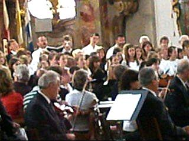
(Mitwirkung der Familie Fischer: Konrad: LBC/ICL (Tenor/Cello); Petra: LBC (Alt))
Volksmusik-Quartett (Dietmar Ehrlich: 1. Trompete, Edith Fischer: 2. Trompete, Konrad Fischer: Tenorhorn und Violoncello, Hans Theil: Tuba) der Siebenbürger Landsmannschaft, Bezirksgruppe Coburg Musikvideo-Downloads von der Muttertagsfeier / dem Frühlingsfest am 19.04.2008 in Coburg: Drei Volksmusik-Sätze / Tanzmusikstücke aus der Notenhandschrift des Josef Kaltenbach (um 1900): Walzer Nr. 23 -7MB +++ Mazurka Nr. 8 - 6MB +++ Garibaldi-Polka - 6MB Walzer Nr. 1 (aus Euphonium: Nr.4 "Sommerfreuden-Walzer" von M. Thies, Op. 46) - 7MB Ode an die Freude (Ludwig van Beethoven) - 7MB
Das siebenbürgische Bläserquintett (Dietmar Ehrlich: 1. Trompete und Leitung, Edith Fischer: 2. Trompete, Konrad Fischer: 3. Trompete, Willi Fischer: Tenorhorn, Hans Theil: Baßtuba) spielt auf zur Muttertagsfeier:
Grindelwald - Härrlich/Grässlich - Mein Alpenvideo bei Youtube:
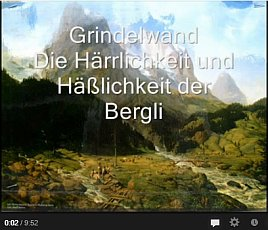
Arpeggio - Tonstudio Tim Birkner. Mit lesenswerten Klassik-CD-Rezensionen und Bestellshop!
Dekanatskantor in Kronach: Marius Popp - mit viel orgellastiger Info)
 Texte/Briefe/Vita von Reuven Moskovitz, * 27.10.1928 in dem Schtetl Frumusica im Norden Rumäniens, + 4.8.2017, Israel, Autor des Politschockers "Der lange Weg zum Frieden. Deutschland - Israel - Palästina. Episoden aus dem Leben eines Friedensabenteurers"
Texte/Briefe/Vita von Reuven Moskovitz, * 27.10.1928 in dem Schtetl Frumusica im Norden Rumäniens, + 4.8.2017, Israel, Autor des Politschockers "Der lange Weg zum Frieden. Deutschland - Israel - Palästina. Episoden aus dem Leben eines Friedensabenteurers"
Reuven Moskovitz zur "Zweiten Schuld", die sich die traumatisierten Deutschen heute durch bedingungslose Unterstützung des israelisch-zionistischen Verbrechertums aufladen - Spannend!
 Video: Reuven Moskovitz erzählt und spielt Mundharmonika - Unser Schtetl brennt - in der ehemaligen Synagoge Altenkunstadt am 03.03.2008 (WMV 10 MB, Aufnahme: Konrad Fischer)
Video: Reuven Moskovitz erzählt und spielt Mundharmonika - Unser Schtetl brennt - in der ehemaligen Synagoge Altenkunstadt am 03.03.2008 (WMV 10 MB, Aufnahme: Konrad Fischer)
Zeichnen und Malen - aus meinem Beaujolais-Skizzenbuch (mit weiteren Skizzen-Links)
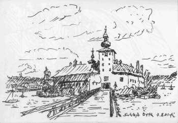
Orth 2002 +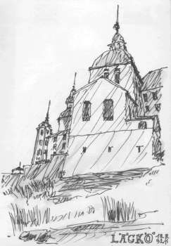
Läckö 1992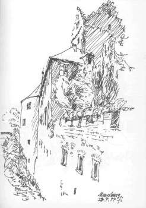
Meersburg 1994 +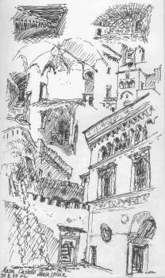
.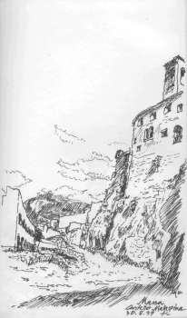
Malaspina 1997 Fürstenstein 2002 +
Fürstenstein 2002 +
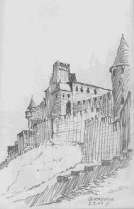
Carcassone 2004Archäoastronomie (z.B. Kai Helge Wirth: Der Ursprung der Sternbilder als germanische Landkarten - nach "Die Rätsel der Sternbilder" von Marcus Hansmann in ARTE am 17.04.2004 und dem Buch "Wirth: Der Ursprung der Sternzeichen")
Mitgliedschaften in Vereinen - Stand Mitte 2009 1975 Bund Naturschutz BN e.V. 1976 Akademischer Gesangsverein München AGV e.V. im Sondershäuser Verband SV e.V. 1979 Bayer. Landesverein für Heimatpflege e.V. 1979 Frankenbund -Vereinigung für Fränkische Landeskunde und Kulturpflege e.V. 1979 Fördergesellschaft Windsbacher Knabenchor e.V. 1984 AHF Internationaler Arbeitskreis für Hausforschung e.V. 1986 Deutsche Burgenvereinigung e.V. zur Erhaltung der historischen Wehr- und Wohnbauten
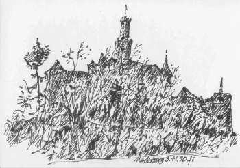
Marksburg 1990, Sitz der Deutsche Burgenvereinigung e.V.1991 Bürgerinitiative Altstadt Wismar BAW e.V. 1991 Hennebergisch-Fränkischer Geschichtsverein e.V. 1993 Verein zur Rettung der Neuenburg e.V.Museums-Info 1995 Verein der Freunde und Förderer der Cistercienserinnen-Abtei Waldsassen e.V. 1996 Südtiroler Burgeninstitut 2012 Nationale Anti-EEG-Bewegung / Stromverbraucherschutz NAEB e.V.
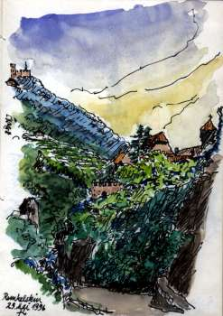
Runkelstein 1996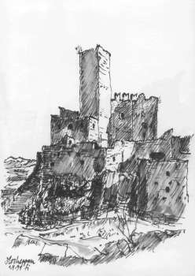
Hocheppan 1991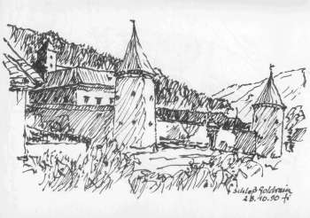
Schloß Goldrain 1990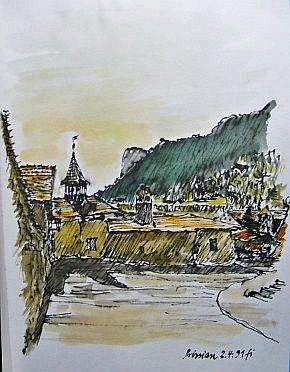
An der Fahlburg in Prissian 1991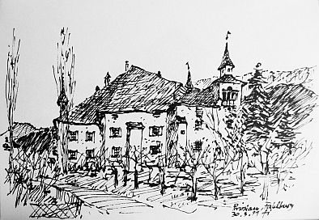
Die Fahlburg 1991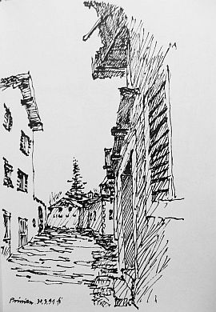
Prissian 1991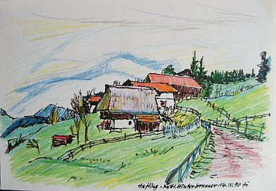
Mittlerer Hinterbrunner in Hafling, Südtirol 1990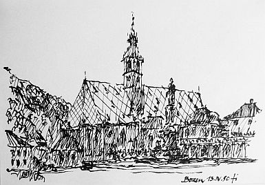
Bozen Maria-Himmelfahrt-Kirche 1990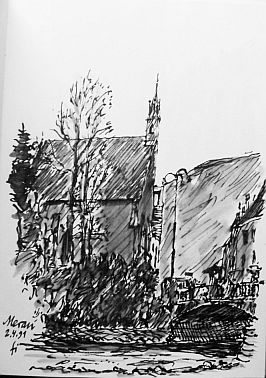
Meran 1991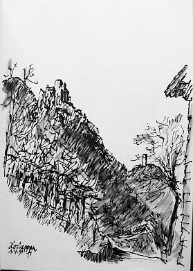
Burg Hocheppan 1991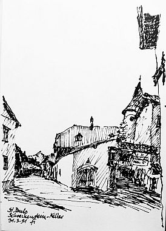
Schreckenstein-Keller in St. Pauls 1991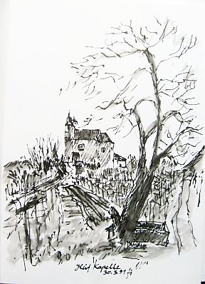
Gleif-Kapelle und Kalvarienberg 1991St. Valentin 1996 St. Vigil 1996
1998 IGB Interessengemeinschaft Bauernhaus e.V. 1998 Yehudi Menuhin live music now Franken e.V. - Skizzencollage vom Yehudi Menuhin live music now Benefizkonzert am 9.10.1999 mit Siegfried Jerusalem und jungen Künstlern in Schloß Weißenstein, Pommersfelden 1999 Siebenbürger Landsmannschaft e.V. (Weiterführung der Mitgliedschaft der verstorbenen Mutter) 20 Jahre Coburger Kreisgruppe <> Dr. Gabriele Mergenthaler: Preisgabe, Sichern, Konservieren, ... ? Zur Situation der kirchlichen Denkmalpflege und Kirchenburgen in Siebenbürgen <> projekt-kirchenburgen.ro - Leitstelle Kirchenburgen: Projektbüro beim Landeskonsistorium der Evangelischen Kirche A.B. in Rumänien (Siebenbürgen / Transsylvanien) zur Koordination der bau- und fördertechnischen Rettungsmaßnahmen an den gefährdeten siebenbürgisch-sächsischen Kirchenburgen <> Tartlauim Burzenland - hier war mein Großvater Viktor Mökesch evangelischer Pfarrer in der berühmten Kirchenburg bis 1941 <> Ausflug der Coburger zur Nachbarschaft Traun 2006 <> Frühlings- und Muttertagsfeier in Coburg 2008
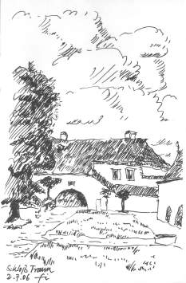
Schloß Traun, Ringmantelanlage - Hier befindet sich im 1. OG der Clubraum und im Hauptgebäude die Heimatstube der Siebenbürger Nachbarschaft Traun
Seminare/Vorträge und Publikationen Aktuelles Seminarangebot
EKD-Stiftung zur Bewahrung kirchlicher Baudenkmäler in Deutschland www.stiftung-kiba.de/ - Hier darf man auch selber was spenden, damit die Kirche im Dorf bleibt!
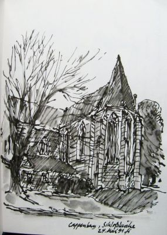
Schloßkirche Cappenberg 1991Konrad Fischer: Fassaden energetisch richtig und kostensparend sanieren 1
 Teil 2 Teil 3 Teil 4 Teil 5
Teil 2 Teil 3 Teil 4 Teil 5
Links zu einigen Bauwerken, an deren Reparatur/Umbau/Modernisierung ich beratend oder mit meinem Architektur- und Ingenieurbüro mitwirke bzw. mitgewirkt habe / Links to restorated / refurbished buildings for which I did the project consultancy or for which my team colleagues and I did the whole planning and the managment of works:
Die Tonenburg in Albaxen bei Höxter Link 2 (Bau- und Projektberatung, Unterstützung bei Förderverhandlungen, 1998-2004)
Kloster Banz in Oberfranken (Bauleitung Generalsanierung der ehem. Benediktinerabtei als Tagungszentrum der Hanns-Seidl-Stiftung, BA 1+2 (Pfarrhaus, Hauptbau, Gesamtanlage-Dächer), 1980-84)
- Luftbild von Ulrich Ohle
Berlin St.-Marien-Kirche Mariengemeinde - Geschichte (Planung und Baubetreuung Turminstandsetzung 2000 ff.)
Berlin, Pankow-Niederschönhausen: Orangerie und Gärtnervillen von Schloß Schönhausen (Notsicherung und Sanierung, Planung und Baubetreuung 1999-2017)
Die Marksburg in Braubach am Rhein, Mitwirkung im Marksburg-Bauausschuß seit 1991; Schadensaufnahme und Maßnahmenplan für Gesamtanlage mit Arch. Klaus Bingenheimer, Darmstadt, 2000; Planung Fassadeninstandsetzung und Verputz des Rheinbaus 2001
Das Bremer Rathaus (Fassaden-, Fenster-, Balkon- und Dachreparatur am alten und neuen Rathaus 2000 ff.) Bald wird Bremens Rathaus ganz verhüllt: Fassade muss saniert werden Restaurierungs-Spezialist meidet Chemie und setzt auf alte Materialien (Senatspressestelle / Senatskanzlei Bremen 21.12.2000) Rathaus 1 taz 20.12.00 Bauschäden: Rathaus mit "gestörter Wasserhaltung"- zur "Musterachse" taz 22.1.02 Massage fürs Rathaus Beschreibung der Restaurierungsmaßnahmen am Neuen Rathaus durch ausführende Firma Hollerung
Burg Burgthann zwischen Altdorf und Nürnberg (Saaleinbau in Keller der Palasruine, Einbau Turmausstieg auf Bergfried, Instandsetzung Ringmauer, Neubau Toilettenbau, Erschließung Kapellenbau, Putz- und Freskensicherung Wohnbau, 1986-95),burgthann/historisches-franken.de, Link Burgverein: Burg Burgthann
{kind=link}
Burkersdorf, ev.-luth. Kirche St. Marien, Gesamtinstandsetzung 1986-89 Küpser Kirchen - Burkersdorf
Eggenbach Lkr. Lichtenfels, Fachwerkhaus Nr. 2/3 Eggenbach Hs. Nr. 2(Planung Gebäude, Haustechnik mit Hüllflächentemperierung, Tragwerk, Bauleitung 1987-90), prämiert mit "Medaille für Verdienste um Kultur und Tradition auf dem Lande" des Bayer. Landwirtschaftsministeriums
Obereggersberg, Schloß Eggersberg, Schloßanlage mit Nebengebäuden, teils mit Legschieferdeckung (Planung Gebäudeinstandsetzung und Umbau Ökonomiegebäude, z.T. Tragwerk, Ausschreibung und Vergabe 1989-1999, aktualisierte Gebäudbewertung+Erfassung Sanierbedarf 2007), Link 2, Link 3 Link 4
Eisfeld, Altstadt (konstruktive Sicherung von ca. 55 historischen Bürgerhäusern, Bestandsaufnahme, Planung und Bauleitung 1992-94)
Schloß Eisfeld, (Bestandsaufnahme, Planung, Gebäude und Tragwerk, Bauleitung für Instandsetzung Steinernes Haus, Dach und Fassade 1991 ff.)
Etzelwang, Schloß Neidstein (Kaufberatung mit Grobkostenschätzung für Nicolas Cage 2006)
Gemünda, evang.-luth. Kirche, Gesamtinstandsetzung 1979-83 (Bestandsaufnahme, Planung, Bauleitung)
Gleußen, evang.-Luth. Kirche, Außeninstandsetzung 1979-80 (Bestandsaufnahme, Planung, Bauleitung)
Lahm im Itzgrund, evang.-luth. Schloßkirche, Gesamtinstandsetzung 1979-92 (Bestandsaufnahme, Planung, Bauleitung)
Lichtenfels, evang.-luth. Martin-Luther-Kirche und Pfarrhaus, Gesamtinstandsetzung 1979-87 (Bestandsaufnahme, Planung, Bauleitung)
Buch am Forst-Lichtenfels, evang.-luth. Kirche und Pfarrhaus, Gesamtinstandsetzung 1981-82 und 1985-86 (Bestandsaufnahme, Planung, Bauleitung)
Reundorf-Lichtenfels, Christ-König-Str. 7, ehem. Gemeindehaus (Umbau und Modernisierung zu Wohnhaus mit Ferienappartement, Bestandsaufnahme, Planung Gebäude, Haustechnik, Tragwerk, Bauleitung 1988-91)
Inselstadt Lindau am Bodensee (Stadtmauern/Bastionen - Baugeschichtliche, technische und geometrische Bestandsaufnahme, Schadensbegutachtung, Maßnahmenplanung 1988-89)
Markt Marktzeuln - Der Koppenhof (1607) (Instandsetzung für Wohnzwecke, technische und geometrische Bestandsaufnahme, Planung, Bauleitung 1979-84)
{kind=link}
Schloß Merseburg (Restaurierung Fassaden und erhaltende Instandsetzung aller Fenster 1995 ff.) - Das Schloß von Merseburg
Michelau in Oberfranken Deutsches Korbmuseum; (Generalsanierung und Museumseinrichtung 1979-94)
Michelau in Oberfranken, evang.-luth. Kirche, Außeninstandsetzung (Bestandsaufnahme, Planung, Bauleitung)
München, Russisch-Orthodoxes Kloster des Heiligen Hiob, Sanierung und Erweiterung (Nutzungskonzeption 2014 ff.)
Schloß Frankleben bei Braunsbreda (Ruinensicherung, Instandsetzungs- und Nutzungskonzeption 2001 ff.) - Berichte der Mitteldeutschen Zeitung 1, 2
 Schloßanlage Neuenburg in Freyburg an der Unstrut (Photo: Ed Kane 2000: Konrad Fischer mit Nutzungsentwurf Neuenburg)
(Generalsanierung mit Planung Gebäude, Tragwerk, Haustechnik und Freianlagen seit 1990,
1993 Gründung und bis 1997 Vorsitz des Wirtschaftsbeirats des Vereins zur Rettung und Erhaltung der Neuenburg e.V.)
- Die Neuenburg in Ed Kanes 'Roads to Ruins' castlesearch.com: Neuenburg (engl.)
- Neuenburg (off. Seite)
- Neuenburg (DBV)
Referenz des Landesamtes für Denkmalpflege Sachsen-Anhalt für die Arbeiten meines Büros
Schloßanlage Neuenburg in Freyburg an der Unstrut (Photo: Ed Kane 2000: Konrad Fischer mit Nutzungsentwurf Neuenburg)
(Generalsanierung mit Planung Gebäude, Tragwerk, Haustechnik und Freianlagen seit 1990,
1993 Gründung und bis 1997 Vorsitz des Wirtschaftsbeirats des Vereins zur Rettung und Erhaltung der Neuenburg e.V.)
- Die Neuenburg in Ed Kanes 'Roads to Ruins' castlesearch.com: Neuenburg (engl.)
- Neuenburg (off. Seite)
- Neuenburg (DBV)
Referenz des Landesamtes für Denkmalpflege Sachsen-Anhalt für die Arbeiten meines Büros
Schloß Oberlangenstadt Instandsetzung Schloßdach und -fassaden, Remise und Pferdestall 1979-88 (Bestandsaufnahme, Planung Gebäude, Bauleitung)
Obristfeld, ev.-luth. Kirche, Gesamtinstandsetzung 1979-94 (Bestandsaufnahme, Planung, Bauleitung)
Die ehem. Synagoge in Odenbach, RLP, - Planung und Einbau Hüllflächentemperierung 2001
Redwitz, ev.-luth. Schloßkirche, Instandsetzung Außen 1979-80, (Bestandsaufnahme, Planung, Bauleitung)
Katharinenkloster Rostock (Baugeschichtliche und Technische Bestandsaufnahme, Denkmalpflegerische Zielstellung, Fachbegutachtung Wettbewerb für Ausbau als Hochschule für Musik und Theater, Instandsetzungsplanung und Ausschreibung unter Projektsteuerung PEHT Berlin und Generalplanung Braun&Voigt, Frankfurt, 1996-97)
Schney, ev.-luth. St. Marienkirche, Gesamtinstandsetzung 1981-90
Seßlach, Flenderstr. 89, Umbau und Modernisierung des spätgotischen Ackerbürgerhauses (Planung und Bauleitung Gebäude und Techn. Ausrüstung, 1986-89) Rothenberger Tor, rechts Flenderstr. 89 Flenderstrasse, links Nr. 89 Schwerin, Puschkinstr. 6 (Konservatorium) und 13 (Brandensteinsches Palais), Umbau und Modernisierung der Barockpalais als Konservatorium und Volkshochschule der Stadt Schwerin (umfangreiche Ergänzung der Bestandsaufnahme und Planungsänderung des Entwurfs des Modernisierungsgutachtens, Planung und Bauleitung Gebäude, Tragwerk und Holzschutzgutachten (nur 6), Haustechnik Wasser, Abwasser, HLS, 2002 ff.) Strößendorf, evang.-luth. Schloßkirche, Inneninstandsetzung 1979-80 (Bestandsaufnahme, Planung, Bauleitung) Veitshöchheim - Fürstbischöfliches Schloß Veitshöchheim (Einbau einer im EG wasser-, im OG elektroversorgten Hüllflächentemperierung mit konservatorischer Zielstellung (Projektbericht), Planung und Ausführung 01/02
Hennebergisches Museum Kloster Veßra, Thüringen (Sicherung, musealer Ausbau verschiedener Objekte seit 1991)
Cistercienserinnen-Abtei mit Mädchenrealschule Waldsassen, Opf. (Generalsanierung 1988 - 2003, Gesamtnutzungsplanung mit schulbauaufsichtlicher Genehmigung, Planung und Durchführung BA1 (Gesamtdach, Fassade Bibliotheks-, Apotheken- und Pfortenflügel, Tragwerksplanung für Dach- und Bibliothekssicherung) 6,4 Mio DM; Planung und Durchführung Neubau Sportplatz, Planung Gesamtfassadeninstandsetzung, Planung und Durchführung BA2 (Umbau und Modernisierung Ostflügel, Bibliotheksflügel, Haustechnikanlagen Kellergeschoß mit Steigsträngen, Sicherung Südfassade Südflügel, Planung Freianlagen/Pausenhof) 15,5 Mio DM; Planung BA3 (Südflügel) 16 Mio DM, )
Weißenbrunnn, ev.-luth. Dreieinigkeitskirche (Gesamtinstandsetzung mit techn. Ausrüstung und Außenanlagen 1981-89)
Weißenfels, eine geschichtsträchtige und sehenswerte Stadt in Sachsen-Anhalt [80 leer stehende Altstadthäuser (Sicherung), Kirchturm St. Marien (Außen-Instandsetzung 1992), Geleitshaus(Generalsanierung 1993-1998, Gebäude, Tragwerk, Haustechnik, Freianlagen) (Kirchturm und Geleitshaus aus Sicht des beteiligten Handwerkers), Pulverturm (Sicherung), Stadtarchiv (Generalsanierung Gebäude, Tragwerk, Haustechnik), Schloßtreppenanlage (Instandsetzung) und Schloß Neu-Augustusburg (Sicherung Dach und Kellerbereich, Nutzungsstudie, Umbau u. Modernisierung Eckbereich für Schloßkirchengemeinde (Planung))]
Referenz der Stadt Weißenfels Referenz des Landesamtes für Denkmalpflege Sachsen-Anhalt
Weyarn, Sitz des Deutschen Ordens OT, Sanierung (verschiedene Bestandsaufnahmen, Planungen und Bauleitungen ab 2004 ff.)
Schloß Wilhelmsthal bei Eisenach (Bestandsaufnahme, Denkmalverträgliches Nutzungskonzept Schloß und Park Wilhelmsthal 2000, Kostenschätzung, Bauabschnittsbildung und Wirtschaftlichkeitsberechnung 1995-97)
 ARD-Kulturreport 22.11.01: VOM SCHLOSS ZUR RUINE - Der Skandal Schloß Wilhelmsthal
ARD-Kulturreport 22.11.01: VOM SCHLOSS ZUR RUINE - Der Skandal Schloß Wilhelmsthal
Schloß Wonfurt (Rohbauinstandsetzung und Teilausbau in mehreren Bauabschnitten, Bestandsaufnahme, Planung Gesamtmaßnahme und Bauleitung Bauabschnitte 1979-94)
Zeyern, Anwesen Kaiser (Hüllflächentemperierung des barocken Schiefer-Wohnhauses 2001)
Links zu Beratungsprojekten und anderen Referenzobjekten Altbausanierung und Neubau
Reichenstein in der Eifel - Wir gründen ein Kloster - Auszug aus der gregorianischen Complet der Benediktinermönche aus Bellaigue / Spendenaufruf (Video von Konrad Fischer)
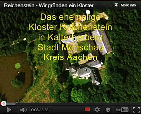
Nürnberg, 12.05.2010 - Verleihung des Kostenspar-Awards von Hausgeld-Vergleich e.V. an Konrad Fischer
Curriculum vitae / Biograpy / Bio of Konrad Fischer
Birth date / place: 28.10.1955 in Würzburg
Parents: Herbert Fischer, 1919-1979, Dipl.-Ing., freelance architect, working in building restoration, private, public and clerical buildings 1957-79; Eva Fischer, born Möckesch 1923-1999, organist and choir director of the Evangelical Lutheran Church in Bavaria
Siblings: Erika Fischer, born 1958, master of porcelain and glass painting, teacher at the Staatl. Berufsfachschule für Glas und Schmuck, Neugablonz; Armin Fischer, born 1962, Dipl-Ing. (FH), freelance Architect
Marital Status: 1988 married with Petra Fischer, born Bothe, established graduate secondary-school teacher for mathematics and religion, preacher of the Evangelical Lutheran Church in Bavaria
Children: 1989 Karolina, 1991 Mechthild, 1993 Editha, 1998 Wilhelm
Schools: 1962-66 Elementary school Schwürbitz 1966-75 Secondary school: Meranier-Gymnasium Lichtenfels, math.-scientifical branch
Languages: German (native), English (fluent) Latin (five years in school), Swedish (working knowledge), Danish and Norwegian (only reading), French and Italian (better tourist level)
1975-76 Basic military service
1976-81 Technical University of Munich, Department of Architecture, Degree: Dipl.-Ing. Univ. (MSc) Architecture
Since 1979 (death of father) freelance working in the own architecture firm
1981 et seq provision of places for work experience (3 - 18 months) for students, engineers and architects from Germany, Bulgaria, Denmark, England, Kazakhstan, Moldova, Poland, Russia, Sweden, Slovenia, Czech Republic, Hungary, partly in collaboration with the German Institute for Foreign Relations, Stuttgart
1982-84 Scientific volunteer at the Bavarian State Office for Preservation of Monuments and Historic Buildings www.blfd.de, departments: reports inventory, building research, archeology, practical preservation, restoration of fine art, workshops, field offices Regensburg and Seehof, Chief: Prof Dr Michael Petzet, later President of ICOMOS International
1984 after 3 years practising registration as architect at the Bavarian Architect Chamber (Bayerische Architektenkammer) www.byak.de
1989 expanding the architecture firm with the specialized planning areas structural engineering and building technology, specialising in planning of room envelope heating systems
1989 appointment to the Advisory Board for the Restoration (Bauausschuss) of Marksburg Castle (www.marksburg.de), home of the German Castles Association (Deutsche Burgenvereinigung www.deutsche-burgen.org), chairman 1989-96
1990 appointment to the Advisory Board for Preservation (Beirat für Denkmalerhaltung) of the German Castles Association, 1st chairman since 1996, 3rd since 2006
1993 founding of the Economic Advisory Council in the Association for the Rescue and Conservation of Neuenburg Castle (www.schloss-neuenburg.de), 1st chairman 1993-97
1979-2007 more than 400 finished restoration projects with architectural and construction planning and management for private and public owners of monuments of local, regional, national and international importance in Germany; some consultancy projects for restauration and refurbishing in Germany, Austria, Italy; more than 300 Internet consultancy projects in Germany, France, Mallorca, Spain, Switzerland, Poland (details and project references see www.konrad-fischer-info.de/1refernz.htm, www.konrad-fischer-info.de/2berat.htm, www.konrad-fischer-info.de/1mader.htm, project list: www.konrad-fischer-info.de/1pl.exe)
Since 1986 several awards for preservation projects
Since 1987 organization and moderation of seminars and lectures ref. preservation planning and practical techniques for german architect chambers, university departments of architecture and preservation of monuments, ICOMOS; castle associations and other institutes in Germany, China, Denmark, Italy, Poland, Sweden (details see www.konrad-fischer-info.de/12akt.htm)
Since 1991: Publication of many articles in technical journals, conference papers and 2007 a book ref. economical preservation planning systems and practical questions
Since 1998: Edition of and contributions for the International Web Magazine for Restoration and Conservation of Old Buildings and Monuments www.konrad-fischer-info.de (Example: Low-cost repair of historical buildings)
Artistic activities 1970 et seq participation in various choirs 1973 et seq cellist in the Instrumental Collegium Lichtenfels 1976 et seq Academic Choir Association Munich AGV 1981 et seq publishing of calendars with own drawings, sketches and aquarelles
Since 1979 free study travels to Denmark, France, Greece, Italy, Netherlands, Poland, Sweden, Yugoslavia 1987 Poland, invitation Architects Association of Poland SARP 1988 Bulgaria, invitation Bulgarian Architects Association SAB 1991 Sofia, Bulgaria, as a German delegate to UNESCO experts meeting, Project 'Blue Danube', Intercultural links and Interaction of Danubian Countries 2012 Iran, as a delegate invited from the Cultural Ibn Sina Institute 2015 Shanghai, study travel combined with an invitation of the Tongji University
Hochstadt 16/01/25